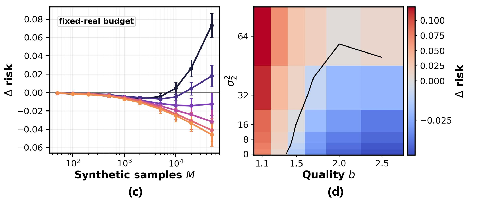
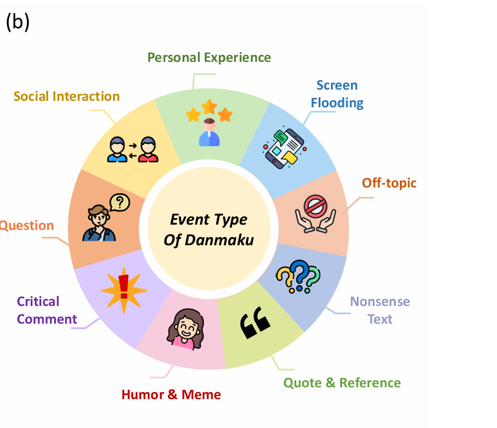

About Me
I’m Jichu Li, currently an undergraduate student in the Honors Talent Program in Statistics and Data Science at Renmin University of China. I'm also a visiting student at Toyota Technological Institute at Chicago, hosted by Prof. Zhiyuan Li, and in collaboration with Prof. Tianhao Wang at UCSD. During my research journey, I had the fortune to work with Prof. Difan Zou on learning theory at The University of Hong Kong and Prof. Feng Zhou on multimodal event sequence modeling at Renmin University of China.
Research Interests
My research interests lie at the intersection of machine learning theory and optimization, with a focus on theoretical understanding of modern optimization algorithms in deep learning, analyzing their convergence, implicit bias, and generalization. I am also interested in empirically understanding the training dynamics and learning behavior of LLMs/MLLMs, with prior experience in LLM-based approaches for modeling complex sequential and event-based data.
I am currently seeking PhD opportunities in CS/Statistics/IEOR starting Fall 2027. Please feel free to email me if you’d like to connect!
News
Publications
* Equal contribution. Google Scholar
-

NeurIPS 2026
Jichu Li, Difan Zou
Neural Information Processing Systems (NeurIPS), 2026.
Also at ICML 2026 Workshop on High-dimensional Learning Dynamics (HiLD).
-
Jichu Li, Xuan Tang, Difan Zou
International Conference on Machine Learning (ICML), 2026.
-
Xuan Tang*, Jichu Li*, Difan Zou
International Conference on Learning Representations (ICLR), 2026.
-
Jichu Li*, Yilun Zhong*, Zhiting Li, Feng Zhou, Quyu Kong
International Conference on Learning Representations (ICLR), 2026.
-

NeurIPS 2025
Yue Jiang, Jichu Li, Yang Liu, Dingkang Yang, Feng Zhou, Quyu Kong
Neural Information Processing Systems (NeurIPS), 2025.
Education
Renmin University of China
B.S. in Statistics, School of Statistics
B.Econ. (Minor) in Fintech, Gaoli Academy, Gaoling School of Artificial Intelligence.
Sep. 2023 – Jun. 2027 (expected) · Beijing, China
GPA: 3.97/4.00; ranking: 2/160+.
Research Visiting Experience
- Toyota Technological Institute at Chicago, Visiting Student
Jul. – Sept. 2026 · Chicago, USA
Hosted by Prof. Zhiyuan Li (on-site).
- The University of Hong Kong, Research Intern
Jul. – Sept. 2025 · Hong Kong SAR, China
Hosted by Prof. Difan Zou (on-site).
Awards & Honors
- [Sept. 2026] NeurIPS Travel Award, Neural Information Processing Systems Foundation.
- [Sept. 2026] Outstanding Student Award, Renmin University of China.
- [Sept. 2026] Academic Excellent Scholarship, School of Statistics, Renmin University of China. ￥8,000.
- [Sept. 2024 & 2025] National Scholarship (twice), highest scholarship for Chinese university students. ￥20,000.
- [Jul. 2025] HKU Summer Research Stipend, The University of Hong Kong. HK$19,600.
- [May 2025] Honorable Mention, Mathematical Contest in Modeling and Interdisciplinary Contest in Modeling.
- [Dec. 2024] Provincial First Prize, Mathematics Competition of Chinese College Students (CMC).
- [Nov. 2024] Provincial First Prize, Contemporary Undergraduate Mathematical Contest in Modeling.
Teaching
- Teaching Assistant, Optimization Methods, Fall 2026.
Services
Conference Reviewer
Instructor
- Statistical Investigation Association of Renmin University of China, 2024 – present. Taught Python programming and wrote tutorial articles for student groups at Renmin University of China.
Blog
Powered by Minimal Light theme.